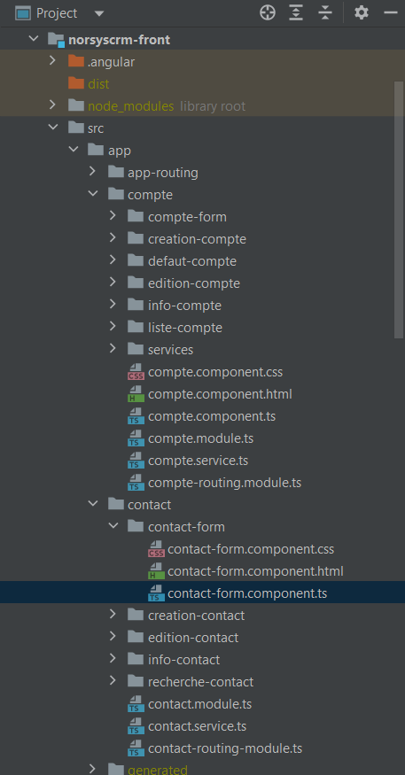
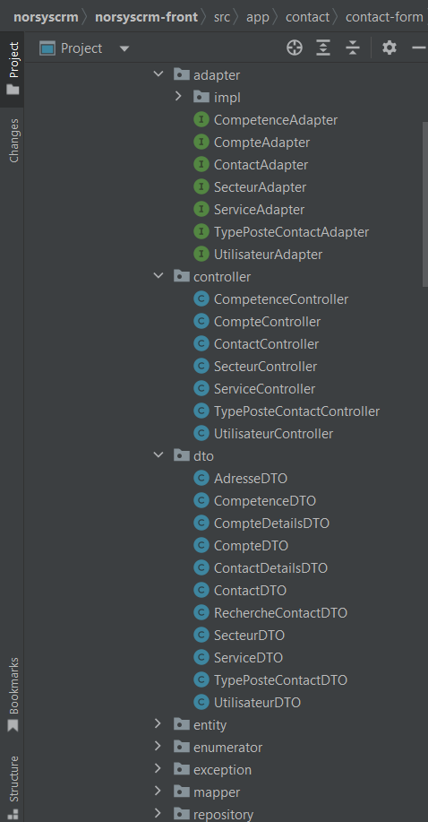
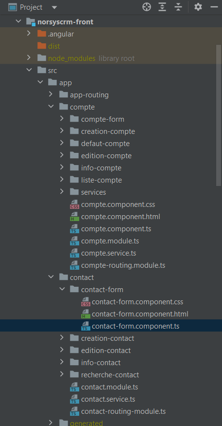
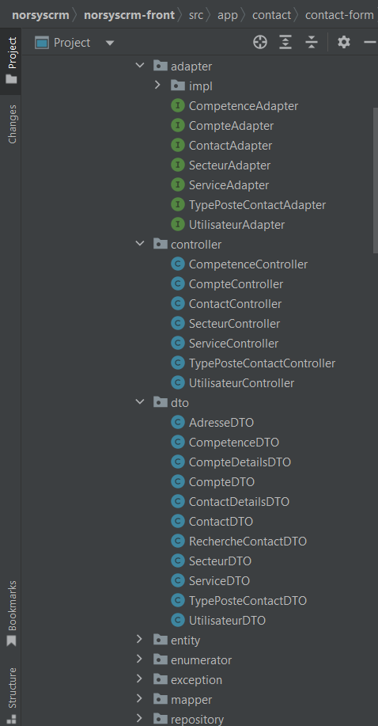

Le sprint
Le projet fonctionne par sprint. Mais alors qu'est-ce que c'est ? Un sprint est une période de temps définie dans la méthodologie de développement Agile. Pendant un sprint, l'équipe de développement se concentre sur un ensemble spécifique de fonctionnalités ou de tâches à accomplir. Habituellement, un sprint dure entre une à quatre semaines. À la fin de chaque sprint, l'équipe de développement présente les fonctionnalités développées à Julien.V pour validation. Celui-ci est un commercial de l'entreprise qui est le client référent de ce projet. Cette approche itérative par sprint permet d'obtenir des retours réguliers du client tout au long du processus de développement et d'ajuster les fonctionnalités en fonction de ses besoins et de ses attentes.Ci-dessous, vous trouverez un schéma illustrant l'organisation des sprints :

Chronologie d'un print
CHAQUE JOUR DU SPRINT
-
A 9h
Réunion dites "Daily" ou l'on fait le point sur ce qui a été fait la veille. On programme également ce que chacun va faire le jour même. Ce Daily permet de faire le point avec les reste de l'équipe, le Product Owner, l'ensemble des développeurs et le chef de projet. Voici ci-dessous la capture d'écran d'une réunion Daily en visioconférence avec l'outil Teams.
-
DE TEMPS EN TEMPS
Dans la journée occasionnellement nous faisons du pair-programing. C'est une méthode de travail qui consiste à codé à plusieurs. Avec des échanges et des intéractions les erreurs sont plus rapidement detectée. C'est toutes les 20 à 30 minutes que la personne charger de coder tourne.
CHAQUE FIN DE SPRINT
-
Rétrospective :
La rétrospective de sprint permet à toute l'équipe du projet de communiquer ce qui ne fonctionne pas, ce qui peut être améliorer et ce qui fonctionne bien. Voici ci-dessous le rapport de retrospection du sprint 5 organisé le 2 juin 2023.
Rapport de retrospection du sprint cinq du 2 juin 2023
Bilan du Sprint précédent :
-Parfois difficile de travailler à 2 en parallèle sur une US (Flavio + Jérémy)
-Beaucoup de formation et d'Udemy (Romain et Hinda)
Qualité de code :
-Lisibilité : 4.8
-Tests : 4.4
-Design (refactor) : 4.4
Total : 4.5/5
On a globalement toujours un code de très bonne qualité, à conserver ! 🙂
Chasse au gaspillage (Muda) :
Les gaspillages identifiés :
-Interruptions
-Jongler entre les projets
-Attendre le pipeline pour merge
-Manque d'expérience
-Retour de Merge Request
La principale cause qui empêche l'équipe d'avancer plus vite reste le manque d'expérience. Il faut qu'on essaie de favoriser et de mutualiser la montée en compétence.
Actions identifiées :
Règle des 1 heure : si on reste bloqué plus d'une heure sur un problème, expliquer son problème dans le canal Help de Teams (et ne pas oublier d'expliquer la correction une fois trouvée pour la partager aux autres 😉). Il est important de se forcer à expliquer le problème, même si vous ne trouvez pas de l'aide, cela aidera forcément quelqu'un d'autre un jour 🙂
Découper en petites tâches pour faciliter le travail en équipe : les US ont été découpées en tâche pour le chiffrage, mais rien n'empêche de les redécouper en sous-tâches si besoin pour se les partager
Garder une bonne communication quand on est à plusieurs sur une US, par exemple :
-Garder un canal Teams ouvert
-Travailler en Pair Programming
-Se partager les tâches (et les découper en tâches plus petites si besoin) et s'appeler dès qu'une tâche est terminée.
Travail en Pair Programming (ou pas) :
-Il est bien de travailler à 2 sur les grosses US, en Pair Programming ou pas
-Le but du Pair Programming n'est pas de travailler plus vite, mais d'accélérer la montée en compétente, à voir au cas par cas et tant qu'elle reste utile
-A chacun de voir sil il veut travailler en Pair Programming (et si ça apporte quelque chose) ou s'il vaut mieux travailler séparément
-Même si on a commencé une US en Pair Programming, rien n'empêche de faire certaines tâches séparément, ou ensembles, en fonction des moments et des besoins (difficulté, montée en compétence...) -
Sprint Planning :
Permet d'organiser en équipe les tâches du prochain sprint.
-
Réunion démo :
Cette réunion permet de montrer l'avancement du projet au client. Comme un sprint dure peu de temps, cela laisse le temps au client de dire ce qui lui convient ou non et de réajuster le tir au besoin.
 


